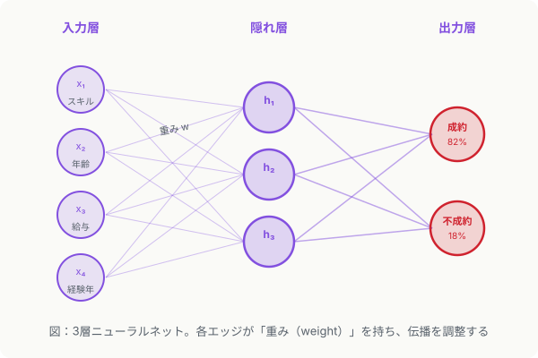

第4章 深層学習・生成AI
この章の要点
- 深層学習は機械学習の一種であり、多層のニューラルネットで複雑なパターンを学ぶ
- LLMや画像生成AIは「深層学習を用いた生成AIの一形態」として位置づけられる
- 入門段階では「何ができるか・何が苦手か」の把握が、詳細な仕組みよりも先に必要
包含関係を整理する
前章で学んだ機械学習の中に、深層学習（deep learning）が位置づけられます。「深層学習 ⊂ 機械学習 ⊂ AI」という包含関係です。深層学習は機械学習の特定の手法であり、多層のニューラルネットワークによって複雑な表現を学習する点に特徴があります。
さらに、生成AI（generative AI）は、深層学習を応用して「新しいコンテンツを生み出す」機能を持つAIの総称です。ChatGPTのようなLLM（Large Language Model）も、Stable Diffusionのような画像生成AIも、この生成AIのカテゴリに入ります。
包含関係のまとめ
AI ⊃ 機械学習 ⊃ 深層学習 ⊃（深層学習を使った）生成AI の一部
「生成AIを使いこなす」とは、AIの特定のサブカテゴリを活用することです。生成AIを使っていても、機械学習・深層学習の基盤の上に立っています。
ニューラルネットワークの直感
ニューラルネットワーク（neural network）は、入力を受け取り、複数の層を経由して出力を返す計算の仕組みです。各層のノードは前の層の値に「重み（weight）」を掛けて合計し、活性化関数（activation function）を通じて次の層に伝えます。

学習の仕組みは「予測値と正解の誤差を計算し、誤差が小さくなるように重みを調整する」ことの繰り返しです（誤差逆伝播法（backpropagation））。これを何千・何百万回と繰り返すことで、モデルは精度を高めていきます。
「深層（deep）」とは、隠れ層が多いことを指します。層が深いほど抽象的な特徴を学べますが、学習に必要なデータ量と計算コストも増大します。
なぜ深層学習は強いのか
従来の機械学習では、エンジニアが「どの特徴量（feature）を入力するか」を手動で設計する必要がありました。深層学習は、この特徴量エンジニアリング（feature engineering）を自動化しました。画像なら「エッジ → 輪郭 → 形状 → 物体」というように、有用な特徴を階層的に自力で学びます。
この性質により、テキスト・画像・音声・動画など、人間が特徴を言語化しにくいデータでも高精度な学習が可能になりました。
LLMとは何か
LLMは、インターネット上の膨大なテキストデータで事前学習（pretraining）した大規模な深層学習モデルです。テキストの次の単語を予測するという単純なタスクを超大規模に繰り返すことで、言語の構造・知識・推論能力を獲得します。
ChatGPT（GPT-4）やClaude、Geminiはいずれもこの仕組みを基盤としています。入門段階でアーキテクチャの詳細（Transformerの仕組みなど）を深追いする必要はなく、「何ができるか・何が苦手か」を押さえる方が実務では先決です。
| モデル種別 | できること | 注意点・限界 |
|---|---|---|
| LLM（テキスト生成） | 要約、翻訳、文章作成、Q&A、コード生成 | 事実の誤りを自信満々に述べる（幻覚（hallucination）） |
| 画像生成AI | テキストから画像を生成、画像の編集・加工 | 細部の整合性（指の本数など）が崩れることがある |
| マルチモーダルAI | 画像＋テキストの同時処理、図の説明、OCR | 複数モダリティを正確に紐づける難易度が高い |
深層学習の限界も知る
深層学習は強力ですが、万能ではありません。学習に大量のデータと計算リソースが必要です。また、なぜその判断をしたかを人間が説明しにくい（ブラックボックス性）という課題があります。金融・医療・法務などの高規制業務では、説明性を求められる場面で採用が難しくなります。
第3章で学んだデータ品質の問題は深層学習でも変わりません。むしろ、モデルが大きいほど学習データのバイアスを精巧に学んでしまうリスクがあります。
実務のポイント
「生成AIに頼めば何でもできる」という過信は危険です。LLMは「それらしい文章を生成する機械」です。事実確認・数値計算・最新情報の参照は、単独では信頼できません。人間によるレビューと組み合わせた活用設計が必須です。
次章では、テキストをベクトルとして扱うNLP技術に焦点を当てます。これは第6章のケーススタディで提案する代替アプローチの核心になります。
もっと知りたい人へ
- Jay Alammar / The Illustrated Transformer — Transformerアーキテクチャを図解した定番記事。LLMの内部構造を視覚的に理解できる（英語）
- deeplearning.ai / Deep Learning Specialization — Andrew Ng監修の深層学習コース。ニューラルネットの基礎から実装まで体系的に学べる（英語）
- Hugging Face / NLP Course — Transformerを使ったNLPの実践的な入門コース。LLMや埋め込みモデルの扱い方を学べる（英語）